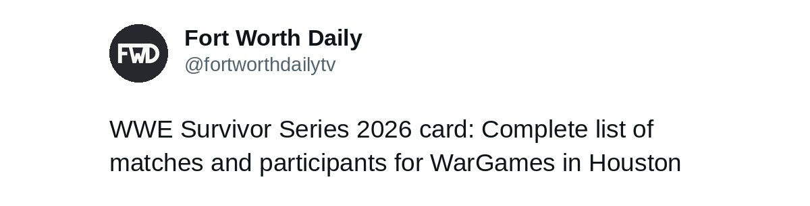

FWD
Fort Worth Daily
Just now · 🌎 · sports · template writer
Just now · 🌎 · sports · template writer
Survivor Series takes place in Houston on Nov. 28 with three namesake matches scheduled. Survivor Series has been defined by two eras: the original event, which ran from 1987 to 2021, and the WarGames period. This year, those eras collide at Daikin Park in Houston. WWE superstars might want to take tips from the Houston Rockets because teamwork is the name of the game.

FWD
story + scoring
{
"source": "CBS Sports",
"kind": "rss",
"score": 0.5724,
"relevance": 2,
"url": "https://www.cbssports.com/wwe/news/wwe-survivor-seies-2026-match-card-matches-date-wargames/",
"image_license": "card",
"image_credit": "Card: FWD"
}